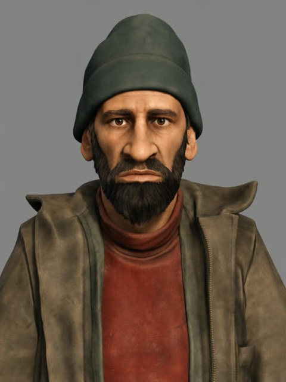
Vasile
The bearded drunk who does all the talking and is always wrong.
characters/vasile/
Storyboard · all episodes
The storyboard, characters and script for the whole series — one tab per episode. Episode 3 is drawn in a different look, so its cast appears twice.
Click any image to like it, dislike it or leave a comment.
The permanent cast. They carry episode 1 outright and they are what the migrants walk into in episode 2 — so every one of them appears in both.

The bearded drunk who does all the talking and is always wrong.
characters/vasile/
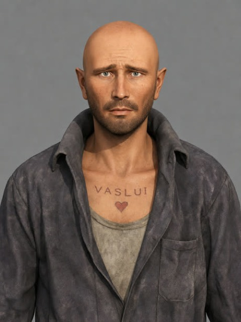
Vasile's bald, literal-minded sidekick, who never puts down his bloody axe.
characters/viorel/
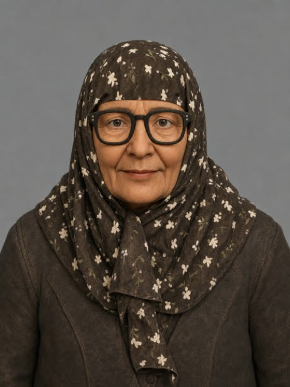
The old woman who runs the granny gang and throws slippers at people's heads.
characters/vasilica/
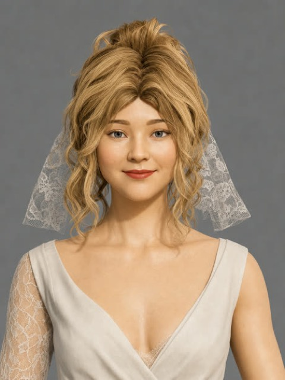
The bride with a leg in a cast, and the one clean pretty thing in the village.
characters/valerica/
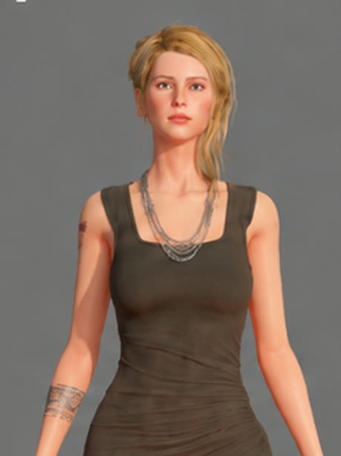
The Saint of Vaslui, the one righteous soul trying to save the village from its sins.
characters/alina/
The pig with the gold Vaslui chain, the show's icon and leader of the animal revolution.
characters/valeriu/
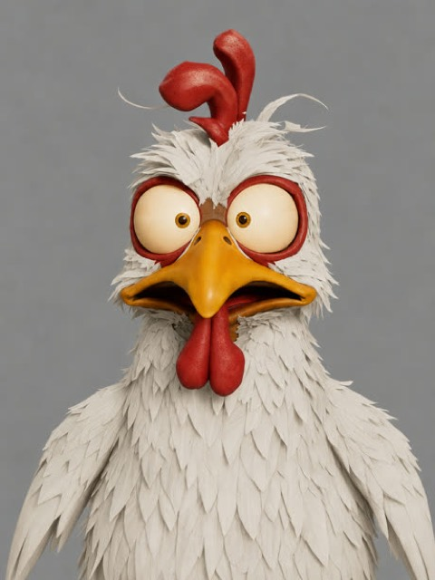
The chicken plotting the animal revolution alongside Valeriu.
characters/vera/
The corrupt mayor who takes bribes in front of the people who elected him.
characters/bribeanu/
The visiting cardinal, permanently sweating and deeply aware of his own name.
characters/kidbanger/
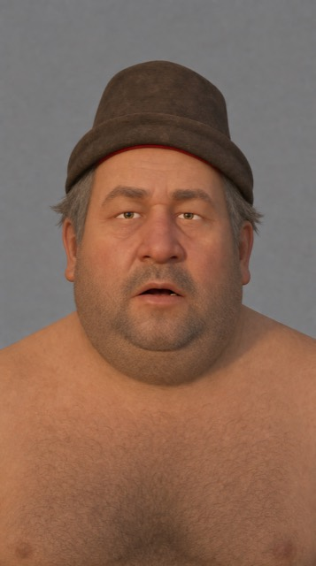
The heavy old drunk, and the only villager whose name does not start with V.
characters/radu/
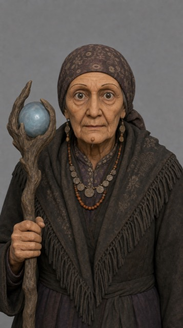
The village witch, still waiting for a name.
characters/vrajitoare/
They arrive up the river Bârlad, watch the village for about ninety seconds, and leave. Two of them speak; the rest carry the reaction cuts, which is where most of the episode's comedy lives. They are the reasonable people in the story — Vaslui is the punchline, not them.
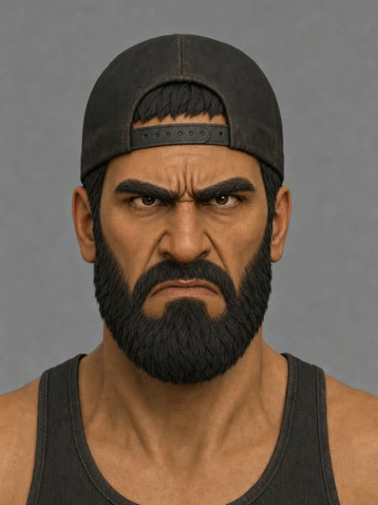
Plays Muhammad, the leader of the migrants who land in Vaslui.
characters/migrants/tarek/
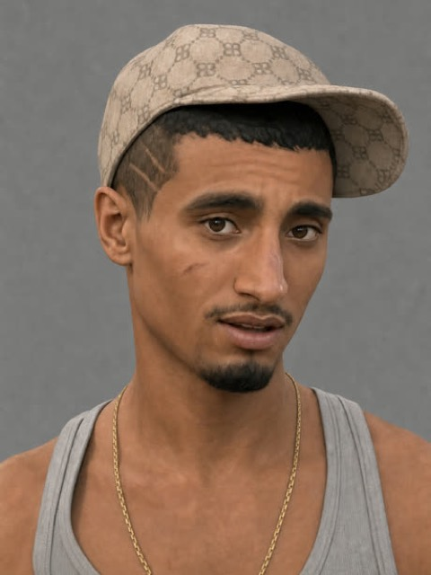
Plays Ahmad, the migrant leader's deputy.
characters/migrants/youssef/
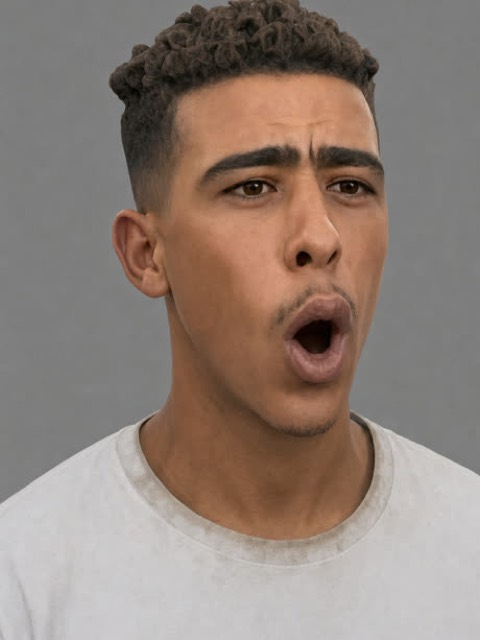
A teenage migrant on the boat, usually caught mid-shout.
characters/migrants/omar/
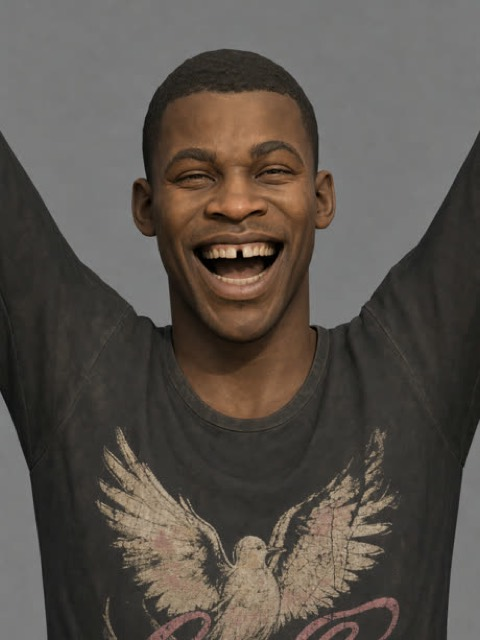
A migrant on the boat with an enormous gap-toothed grin.
characters/migrants/ibrahim/
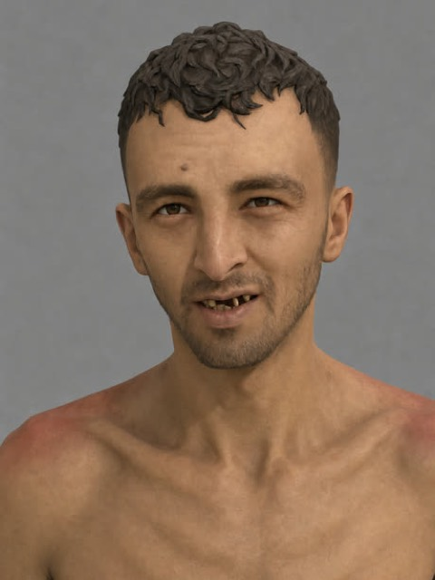
The thinnest migrant on the boat, still dripping from the river.
characters/migrants/hakim/
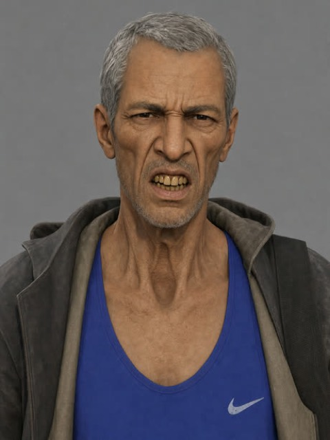
The oldest migrant on the boat, at about fifty.
characters/migrants/driss/
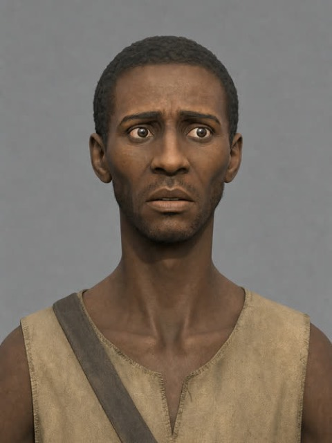
A lean, long-necked migrant on the boat.
characters/amadou/
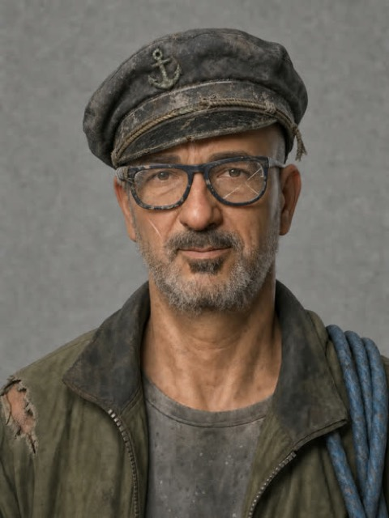
The smuggler who ran the migrants' boat up the river.
characters/migrants/captain/
Status: client's draft, saved verbatim. Changes expected. From Avihai, 29 Aug 2026. This is the source of truth for the episode — the premise text in the folder README is superseded by it. Nothing below has been rewritten or punched up, with two exceptions recorded here:
29 Aug, Avihai: the arrival was changed from the sea/coast to the river Bârlad.
Vaslui is landlocked, so a coast could not exist there; the Bârlad genuinely runs through the
county. Reference photo: ../assets/reference-river/. Only the two arrival/departure lines
were touched — every other beat is exactly as written.
30 Aug, Avihai: the pig's entrance changed. He no longer walks up to the migrants —
he arrives by catapult. About two seconds are added ahead of the Mona offer: the
tractor-mounted catapult with Valeriu loaded in the tray instead of a stone, the old women
firing it, the pig flying, and the landing. Only that one bullet was touched; the Mona offer
itself and every other beat are exactly as written. Prop already built:
../../../props/catapult-tractor/.
Immigrants arriving with the boat up the river Bârlad — the real river that runs through Vaslui county, past Muntenii de Jos. Narrow, brown, half-choked with reeds, steep eroded earth banks, broken concrete in the shallows, flat dry farmland either side. Not a sea crossing and not a coast: they have come up a muddy inland river and this is where it runs out.
As they get off the boat and go to land (vaslui village):
IMMIGRANT LEADER (big arab with arab accent, emotional):
"Yalla shabab we finally made it to Europe. We left our homes, our families, paid all the money that we had. All for this moment to start a new life in Europe!"
Then they see everything going on in the village (scene 2). Shots changing between village events and their faces. With each shot back to their faces they look more and more shocked.
Village events:
Immigrants looking completely shocked.
ARAB LEADER:
This is what we sacrificed everything for?!
Screams Allaaaaaaaaa (looks at the sky throwing his hands up in the air).
Continues to his deputy standing next to him:
"Ahmad get the boat!"
AHMAD (to leader):
"But Muhammad, we came all this way…."
LEADER (to Ahmad):
"Get the boat Get the boat Get the kusheli ochtak boat" Ya iben sharmuta….
Long curses in Arabic continue while immigrants get back on the boat and go back down the river the way they came.
Shot zooms out to see Mayor Bribeanu in the EU headquarters with politicians watching all of this on a screen.
BRIBEANU (to the politicians, speaking with confidence):
"See, I told you. All you have to do is place some of our Vasluians in your port cities and your immigration problems are over"
EU POLITICIAN (to Bribeanu):
"Mayor Bribeanu — you're a genius!"
(Other EU politicians in the room nodding their heads in approval.)
Wheelbarrows of cash come in the room and are dumped on the table for Bribeanu to take.
He does an evil laugh while the money is being dumped on the table.
Recovered episode 3 reference board. Production notes below reflect the original September 9 board; later shot versions are documented in the episode folder.
Episode 3 is THE VASLUIANS — the whole cast redrawn as flat yellow 2D cartoon characters. It is not the series' 3D look, so every character exists twice: the 3D version on the cast tab, and the version below. Same identity, same wardrobe, same props; only the drawing changes.
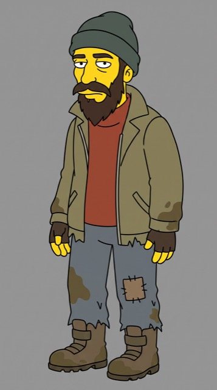
The bearded drunk who does all the talking and is always wrong.
cast/vasile-simpsons.png
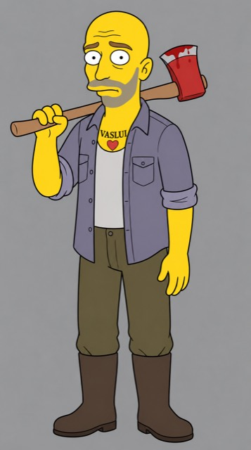
Vasile's bald, literal-minded sidekick, who never puts down his bloody axe.
cast/viorel-simpsons.png
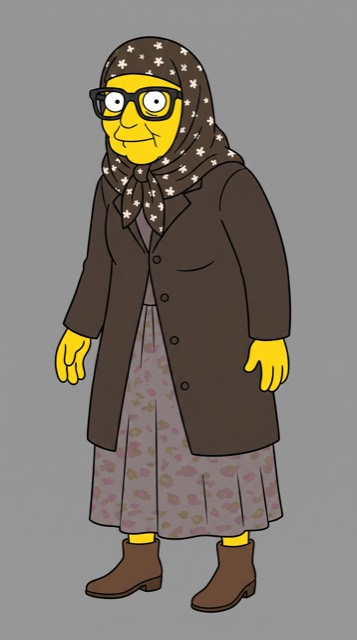
The old woman who runs the granny gang and throws slippers at people's heads.
cast/vasilica-simpsons.png
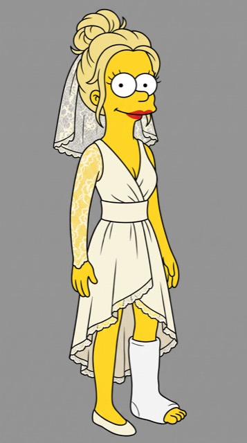
The bride with a leg in a cast, and the one clean pretty thing in the village.
cast/valerica-simpsons.png
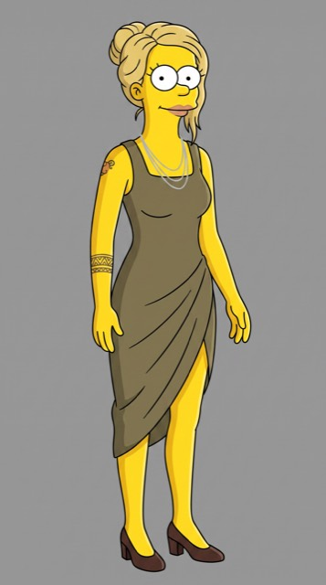
The Saint of Vaslui, the one righteous soul trying to save the village from its sins.
cast/alina-simpsons.png
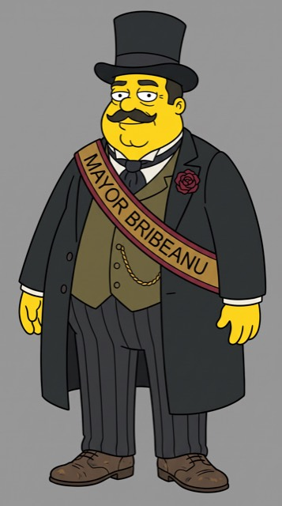
The corrupt mayor who takes bribes in front of the people who elected him.
cast/bribeanu-simpsons.png
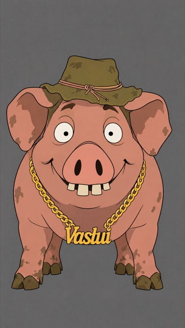
The pig with the gold Vaslui chain, the show's icon and leader of the animal revolution.
cast/valeriu-simpsons.png
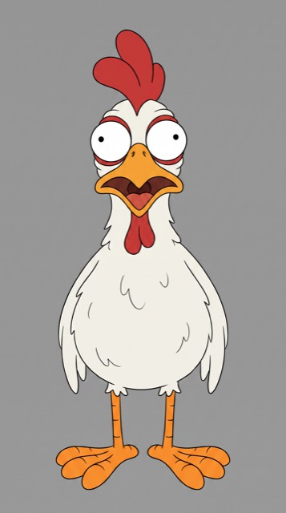
The chicken plotting the animal revolution alongside Valeriu.
cast/vera-simpsons.png
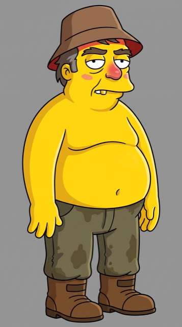
The heavy old drunk, and the only villager whose name does not start with V.
cast/radu-simpsons.png
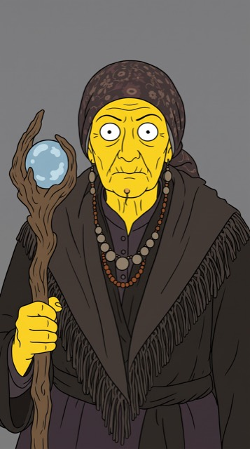
The village witch, still waiting for a name.
cast/vrajitoare-simpsons.png
Standalone pieces on plain grey, built to be dropped into a shot rather than to stand on their own. Same flat look as the cast.
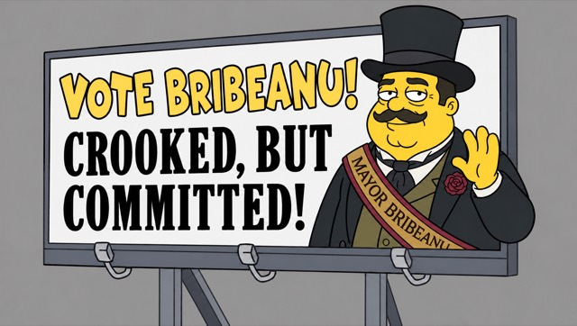
VOTE BRIBEANU! · CROOKED, BUT COMMITTED!
NoteThe mayor waving off a roadside hoarding, top hat and sash, a rose in the lapel. The joke is entirely in the second line, so the lettering has to stay legible at whatever size it ends up in frame — plan an insert if it is ever far from camera.
assets/prop-billboard-bribeanu/
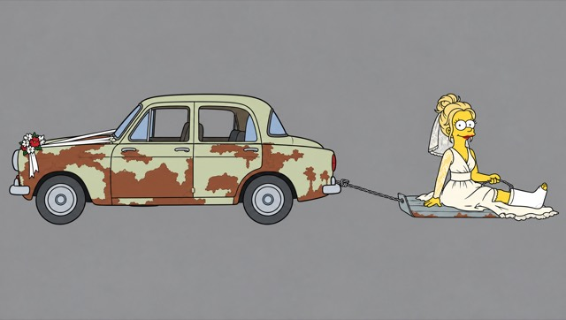
Scene 3 — and the bride is not inside it
NoteA rusted-out saloon with wedding flowers and ribbons on the boot, towing Valerica behind it on a sheet of metal by a chain — veil on, plaster cast on, entirely unbothered. The script has her sitting in the back; this take drags her instead, which is funnier and worth a decision before the shot is blocked.
shot-03-church-wall-mona/comp/
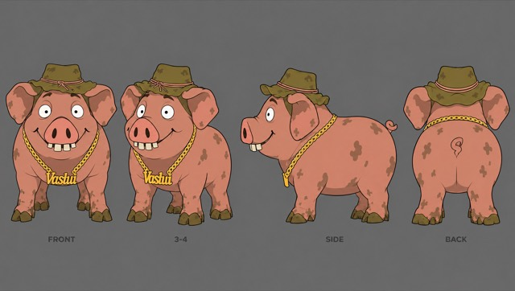
FRONT · 3-4 · SIDE · BACK
Scene 1 straight through to scene 3, as one move: the camera comes through the cloud layer, the title settles in, and it keeps going — down over the village, into the street, up to the church, and finally onto the wall. This strip updates as frames are approved.
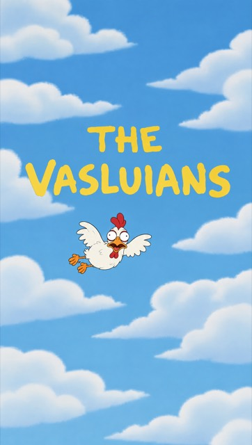
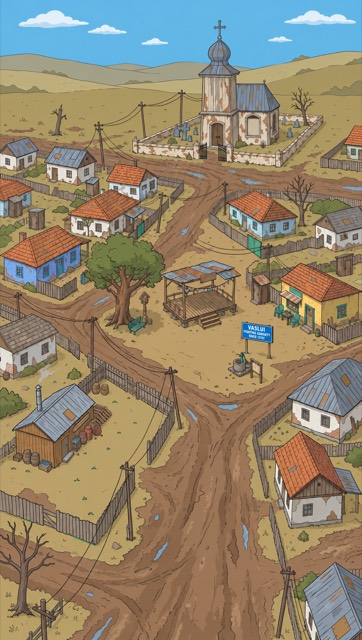
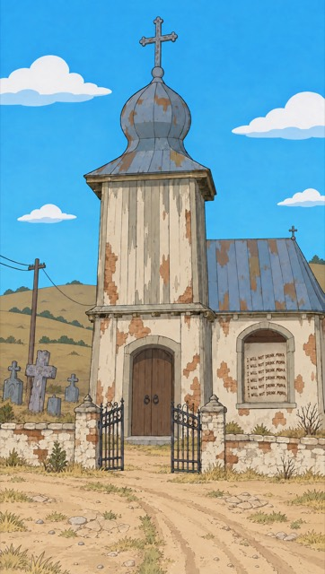
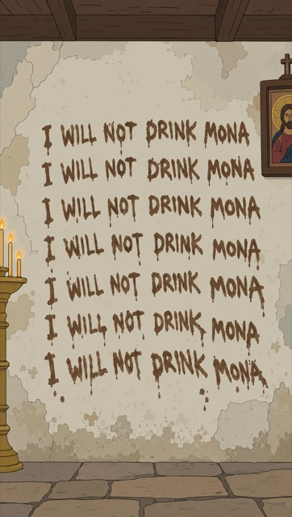
Both church plates came from the other session working on scene 3; the two village frames were built against them so the sequence matches. One frame is still missing — the step through the door, between the exterior and the wall.
From Avihai, 9 Sep 2026. He flagged it may still shift. Music is the opening's own register crossed with manele.
Blue sky, white clouds part. The camera pushes through. THE VASLUIANS appears.
The camera dives through the lettering and drops into Vaslui — dirt road, pantile roofs, leaning power poles, sagging wires.
The church; a wedding inside. Outside the wedding car waits with ribbons and Valerica already in the back. Valeriu finishes his last line in the mud — I WILL NOT DRINK THE MONA — drops the hoof, picks the bottle up and drinks. Jumps in and drives off with her. The bottle stays with him for the rest of the film.
A tractor outside the distillery with a concrete mixer hitched behind it; Viorel is already in the drum with a bottle, waiting. Inside: vats, copper pipework, crates to the ceiling. End of shift — Vasile lights a cigarette in the doorway, inside an alcohol plant. He walks out; behind him the whole distillery goes up in blue flame. He does not turn round. Neither of them notices the fire.
In the street, the village creep closes in on a young woman. Vasilica, on the bench at the village entrance, draws a slipper and throws it. It hits him square; he lands in a wheelbarrow. She collects her slipper, takes the handles and sets off with him in it.
Tractor, wheelbarrow and wedding car all reach the last corner at the same moment and nearly collide. Throughout: a column of smoke standing over the village.
A big brown puddle in the middle of the village. An old torn sofa standing in the water, an old television on a crate facing it, its cable running down into the puddle. They all sit. Vasilica tips the wheelbarrow and the creep rolls out face down. The television sparks, smokes, and dies. Black.
Aliens defeat every army on Earth. Humanity’s last hope is a village of drunks. Script from Nir, 16 September 2026. The references below identify the existing cast; the generals and alien portraits are approved; space costumes remain to be designed.
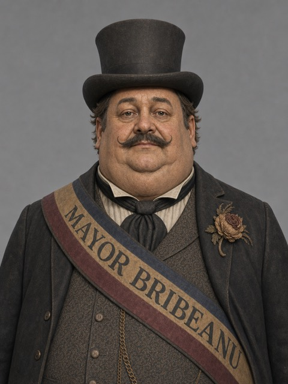
The mayor who pretends not to understand English until the generals pay him.
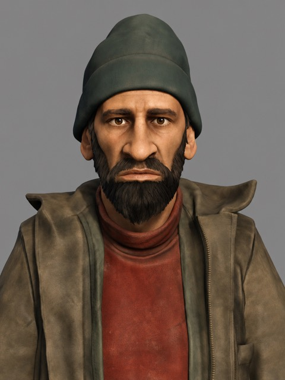
One of the two Vasluinauts, sent into space with a bottle and a pitchfork.
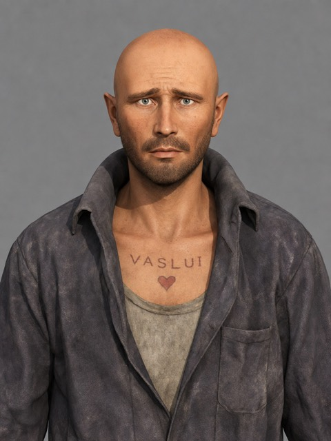
The other Vasluinaut, who takes his axe into space.
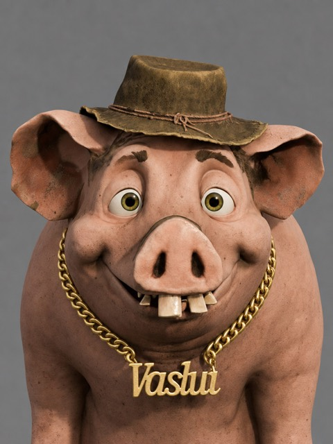
The pig who pilots the onion ship and pumps the Mona.
The heavy old drunk who launches the onion ship.
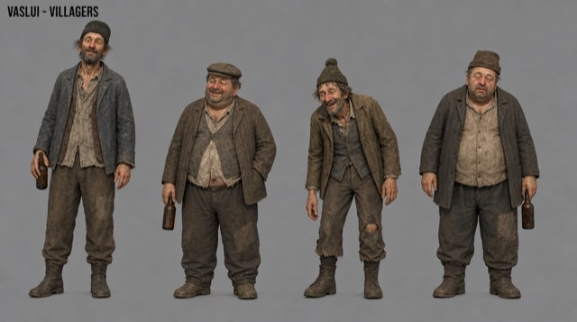
The drunk men in the crowd at the launch.
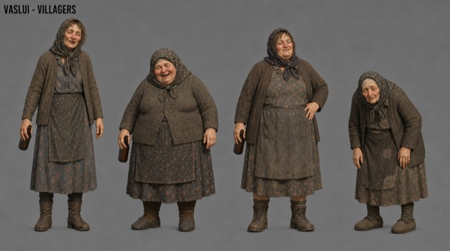
The village women in the crowd at the launch.
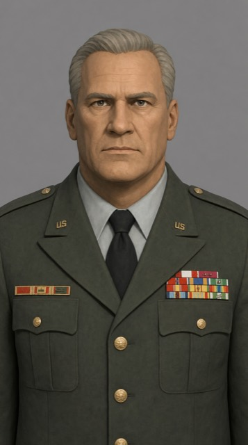
The silver-haired general sent to Vaslui to beg the mayor for help.
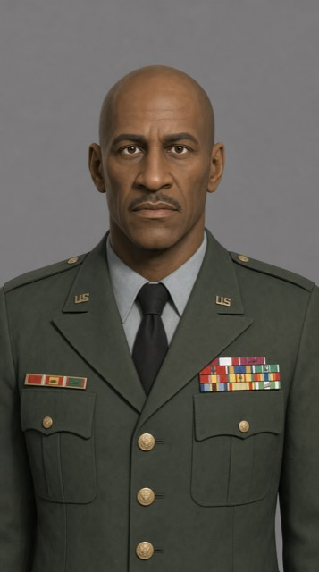
The second general sent to Vaslui to recruit the village.
Chosen from the alien vote below.
Chosen from the alien vote below.
The three directions that got a like. Open each one, like the one you connect with most, and leave a comment on anything you would change.
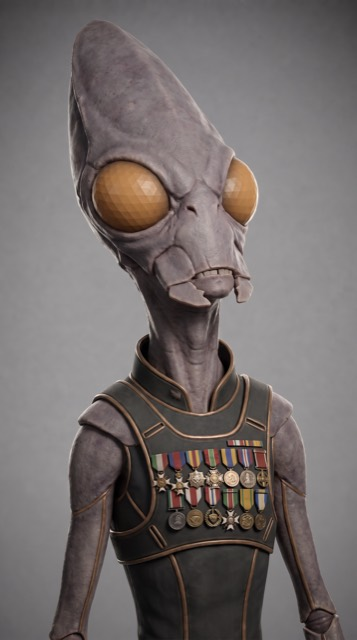
A tall insect general who looks down on humanity from a very long head.
A senior clerk of a superior civilisation, with a giant brain and a sour little face.

A muscular blue warrior who leads the same species as the Blue Soldier.
Much bigger and more advanced than the Vaslui ship. Three directions up for a look — more may come. Open each one, like the one you connect with most, and leave a comment on anything you'd change.
Client's pick, scaled up 17 Sep 2026: a huge dark-metal disc with a glass command dome, satellite weapon pods on struts around the rim, bigger glowing engines and denser hull detail for a far more massive, imposing read.
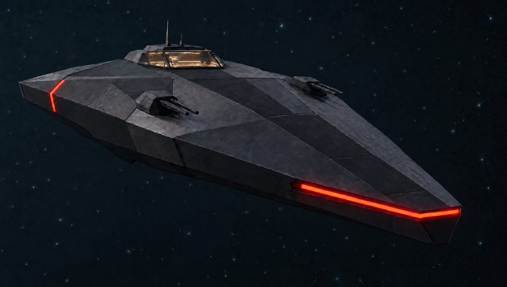
A sharp angular dreadnought, dark gunmetal armour, glowing orange edge lighting, a glazed bridge slit and heavy cannon turrets.
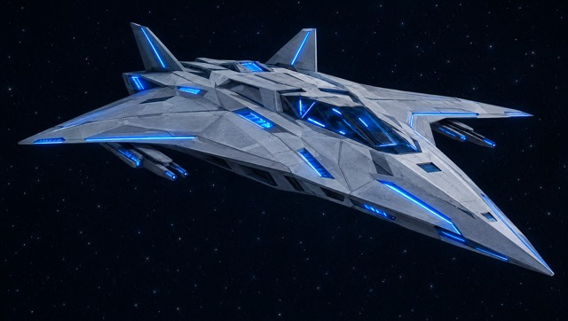
A sleek pale-grey swept-wing warship with glowing blue neon seams, twin tail fins and wing-mounted cannons.
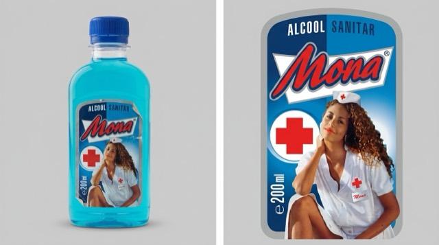
The rubbing alcohol that wins the war, and the label for the giant tank.
The real county flag, with Valeriu's face filling the shield in place of the beehive, fish and ox. Goes on the ship and on the spacesuit shoulders.
Still to design: Vasile and Viorel’s spacesuits, Valeriu’s spacesuit, the onion ship (inside and outside), alien mothership, mayor’s office, Mona tank and hose. The chest patches read VASILE / VIOREL; the shoulders carry the Vaslui flag above.
Where the generals beg the mayor for help.
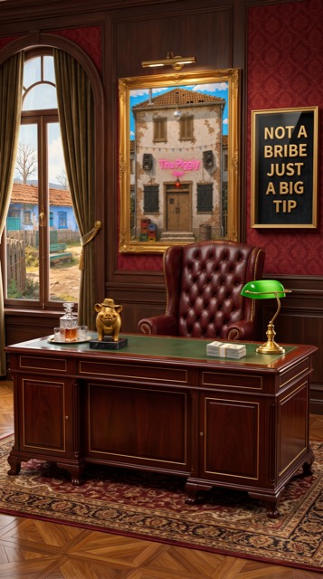
The mayor’s gold-trimmed office, far too grand for the muddy village outside its window.
The village the ship takes off from.
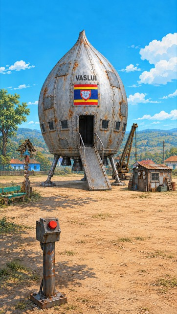
Episode 1's village square, the wooden stage replaced by the ship standing directly on the ground — roughly twice the height of the surrounding cottages, braced by a small crane (not attached, so it can still fly), a low dingy maintenance shed, and a red launch-button post in the foreground. The tree stands clear of the ship's path. Updated 17 Sep 2026 for the ship's new onion-skin hull.
The onion ship, outside and in.
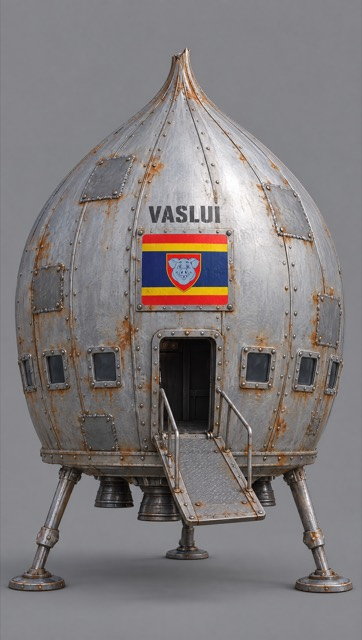
Redesigned 17 Sep 2026: the hull is now literal onion skin — pale papery ivory-cream, crinkled and striated like a real onion, with loose skin-flap repairs tied down with twine instead of welded metal patches. Replaces the earlier bare-metal version.
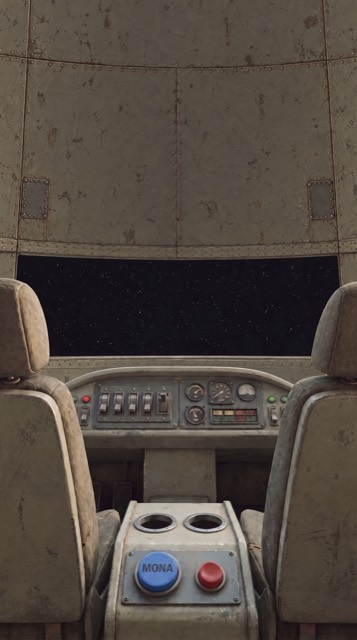
The pig pilot's cockpit, seen from behind the two seats: a flat starfield window, analog 1980s dashboard, and the divider panel between the seats carrying the blue MONA button and the red skull-and-bottle emergency button.
The shared design, then each Vasluinaut — ready for space and inside the ship.
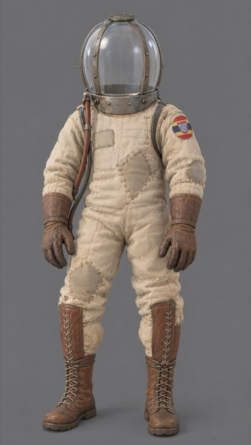
Antique diving-style suit — mended canvas, panoramic glass dome helmet, Vaslui flag patch on the right shoulder. Shown empty; each lead gets dressed in this same design next.
Vasile suited up for space, helmet on, ready to step outside.
Vasile in his spacesuit without the helmet, the way he walks around inside the ship.
Viorel suited up for space, with his red hatchet.
Viorel in his spacesuit without the helmet, the way he walks around inside the ship.
Same suit design, adapted to his four-legged body: cloven hooves, the hat mounted on the helmet crown with a few curls showing through the glass, his exact gold Vaslui chain worn over the suit.
Valeriu in his pig spacesuit without the helmet, gold chain on, the way he flies the ship.
The weapon that wins the war.
The Mona weapon tank, wall-mounted inside the ship — a wide, bulky tank roughly 2m tall and 1m wide, with a visible internal dip-tube in the liquid and a transparent feed line running up to the ceiling. Shot pulled back to show the tank's true scale against the room.
The clear hose that carries the Mona from the tank into the alien ship.
Where the aliens laugh, get drunk and end up on the barbecue.
Chosen from the mothership vote above.
Command bridge and screen, with room for the Mona flood and final scene.
Ten story beats from the draft; shot timing is not locked.
Alien ships hover over familiar landmarks while the British narrator describes humanity’s defeat.
Generals ask Mayor Bribeanu to deploy the Vasluians. He claims not to understand their English.
Cash lands on the desk. Bribeanu switches to perfect English: “Deploy the Vasluinauts!”
Radu launches a battered onion-shaped spaceship from muddy Vaslui, with Valeriu at the controls.
The village ship approaches the alien mothership in space.
Vasile and Viorel emerge in antique diving-style spacesuits, carrying a bottle, pitchfork and axe.
The commander and crew watch the two villagers on their screen and laugh.
Valeriu drags the hose from the huge Mona tank; Vasile and Viorel attach it to the alien ship.
Valeriu presses the red button. Mona floods the ship; the aliens become drunk, then drop dead.
Inside the mothership, Vasile and Viorel spit-roast the alien commander and toast with their bottles.
Its first draft only: Alien spaceships seen hovering over major cities on earth (use known landmarks) Narrator voice in perfect British English: "the day we all feared is upon us. The destruction of all of humanity… The extra-terrestrials have found us, they are far more advance, and we cannot push them back any longer. Humanity has used all of it weapons and technologies. All has failed. We are doomed and this is our end. Unless… Army generals with mayor bribeanu in his office in Vaslui: Generals: Mayor Bribeanu, humanity is desperate and you might be our last chance of survival. We need the Vasluians against the alien invasion. Bribeanu sitting at his chair next to his desk: "you know my English not so good. We are simple Vasluians. Please try to speak in a way that I will understand." Generals looking at each other. One rolls his eyes at the other and starts putting cash on Bribeanu's table. "do you understand us better now?" Bribeanu switches to perfect Shakespearean English: "why certainly kinds sirs. You have thrown down the gauntlet and the noble Vasluians shall be delighted to oblige" Bribeanu gets up from his chair raising his voice and pointing his finger in the air: "Deploy the Vasluinauts!" (Vasluian Astronauts) Scene changes to an funny looking crappy spaceship shaped like an onion, launching from the village (village surroundings look usual – muddy with drunk people around). Valeriu the pig is piloting the spaceship is a funny pig spacesuit. The vasluian spaceship gets to space and is facing the alien ships and is face to face with the main alien mother ship. Vasluian spaceship opens and vasile and viorel go out into space – dressed in funny spacesuits (maybe like old scuba gear from 100 years ago), with names patches (Vasile, Viorel) on the top left chest), and on their side-shoulders the flag of Vaslui. Viorel is holding an axe. Vasile is holding an alcohol bottle in one hand and a pitchfork in the other hand. Cut to alien mothership where the alien commander is looking at his screen at vasile and viorel in space, and laughing Other aliens next to him in their spaceship also laughing. Cut to the inside of the Vasluian spaceship where the pig is next to a huge tank of mona (see the blue liquid and mona labels on the tank) and dragging a huge hose to the exit of the spaceship where vasile and viorel grab it and connect it to the alien ship. Valeriu the pig pressed the big red button on the mona tank and mona starts coming out from the tank through the hose in space and into the alien ship. The mona pours in and all the aliens start getting drunk – walking around like they are drunks losing control, and after a few seconds they all drop dead. Cut to next scene – vasile and viorel in their spacesuits on the alien mothership roasting the head alien on a spit over a barbecue (inside the alien ship) The alien is impaled and is being grilled and rolled over the barbecue. Vasile and viorel raise their alcohol bottles and drink.
From Nir's draft, formatted and punched up. Changes are additive — every original beat is intact. Runtime target: 3:30–4:00. Ends on the drop of the Escape from Vaslui song.
FADE IN:
Wide. Crooked houses, a dirt road that has never met asphalt. Bottles. Everywhere, bottles — in the mud, on the fences, in a baby carriage.
Villagers young and old lie where they landed. A CHICKEN staggers past a GOOSE. Both are drunk.
VALERIU the pig lies flat on his back, belly to the sky, tongue out, bottles arranged around him like a shrine.
(Hold. Let it be quiet. Somewhere, a cow falls over.)
A broken wooden carriage pulled by a horse that has clearly given up rattles into frame. Standing in it: MAYOR BRIBEANU, 1880s suit, top hat, sash reading MAYOR.
MAYOR BRIBEANU
Fellow Vasluians! Kindly follow me and gather in the village square for an important
announcement from our church community leader.
Villagers look at each other, puzzled.
VASILE (not moving)
We have a square?
A wooden stage held together by belief. On it: MAYOR BRIBEANU and CARDINAL KIDBANGER, in full crimson-and-white regalia and a tall mitre. He is sweating through it.
The crowd: worn-out villagers, every one holding a bottle. Animals mixed in among them. VASILE and VIOREL at the front. Viorel's axe is on his shoulder, as always.
MAYOR BRIBEANU
Honourable Vasluians. The Cardinal himself has come to Vaslui to bring you a message
from our highest religious order. Cardinal Kidbanger —
(A woman in the crowd grabs her child and hides him behind her back.)
MAYOR BRIBEANU (cont'd)
— you have the Vasluians' ears.
CARDINAL KIDBANGER
Thank you, Mayor Bribeanu.
Bribeanu coughs. Pointedly.
CARDINAL KIDBANGER
Ah. Yes. Of course.
He produces a thick stack of cash and hands it over. Bribeanu pockets it without breaking eye contact with his constituents.
Two villagers exchange a look.
VILLAGER #1
Maybe electing a man named Bribeanu has not been our wisest decision.
VILLAGER #2
He ran unopposed.
VILLAGER #1
He ran unopposed twice.
The Cardinal unfolds a paper. His voice is already shaking.
CARDINAL KIDBANGER
My fellow Vasluians. It has been decreed that from this day forward, all forms of alcohol
will be banned throughout Vaslui.
(Silence. Absolute. A bottle slips out of someone's hand and does not break, because it lands on another bottle.)
Shots of stunned faces. Somewhere in the back, a goose faints.
CARDINAL KIDBANGER (faster, sweating harder)
But it's really not so bad if you think about it! We can go back to drinking water. Reading
books. Developing hobbies. Even showering more regularly. So it's not so bad. Right?
... Right?
A hand goes up.
VILLAGER #3
What if we drink it only for sanitation?
(He holds up a bottle. The MONA label is clearly visible.)
CARDINAL
No.
VILLAGER #4
What if we mix it with water? Then it's mostly water, right?
CARDINAL
No.
VILLAGER #5
What if we also use it as fuel for our carriages?
CARDINAL
No.
VILLAGER #6
What if we also share it with our children?
The Cardinal pauses. Something flickers.
CARDINAL
Hmmm. Children, you say —
MAYOR BRIBEANU (sharp)
KIDBANGER.
CARDINAL (snapping back, shaken)
No. No. Still no.
VALERIU the pig stands up in the middle of the crowd.
VALERIU
What if only the pigs still drink it?
(Beat. Nobody in the crowd finds this remarkable.)
The Cardinal looks out at a village where a pig has just asked a follow-up question, and something in him quietly dies.
CARDINAL
... Okay. No more questions.
He starts to fold the paper. Stops. Remembers.
CARDINAL (cont'd)
Oh — and one last tiny thing. Your village bar will now be turned into a library.
PUSH IN on the crowd. Watch the faces travel, one at a time, from disbelief to rage.
VIOREL takes the axe off his shoulder.
CARDINAL (turning to the Mayor, relieved)
Well. I think that went alright. They seem to be taking it rather well.
HARD CUT.
An OLD VILLAGE WOMAN — VASILICA — marches at the head of the mob holding a spike. On the spike: the Cardinal's mitre. (We do not need to see more than the mitre. It is funnier.)
Behind her, the entire village. Pitchforks. Shovels. Torches. Wheelbarrows at full speed.
They hit the church like weather. Bottles fly. Axes fly. Priests run and are, in passing, beaten. Somebody has brought the pig. The pig is helping.
DISSOLVE TO:
Smoke. Embers. A charred cross leaning at an angle it will keep forever.
VASILE and VIOREL stand in front of it, looking at the ruin. Calm. Unhurried.
VASILE
It's a shame it had to come to that.
VIOREL
Yeah. But what can you do. They really didn't give us much choice.
VASILE
Yeah. I guess not.
They each open a bottle. They clink.
Vasile takes a long drink and looks at the smouldering church with something almost like affection.
VASILE
You know what the worst part is? Now we have to build a new one.
(beat)
Where else are we going to hide the țuică?
SMASH TO BLACK.
DROP: "ESCAPE FROM VASLUI" — MAIN TITLES.
Key frames generated for this scene: `scenes/s01_village_wide`, `scenes/s02_square_announcement`, `scenes/s03_church_ashes`.